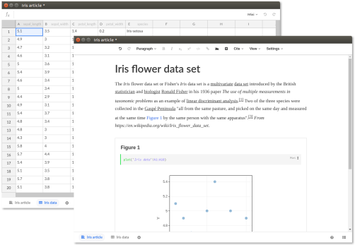

Stencila Desktop
Use Stencila on your own computer, with your own data, on- or offline. Stencila Desktop is a conventional desktop application allowing you to save and open files to and from your local file system.
{{ download('desktop', '0.28.0') }}
See the installation instructions for connecting Stencila Desktop with alternative programming languages.
